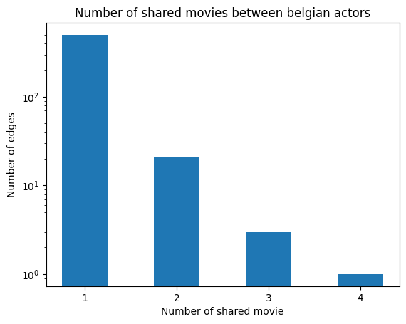
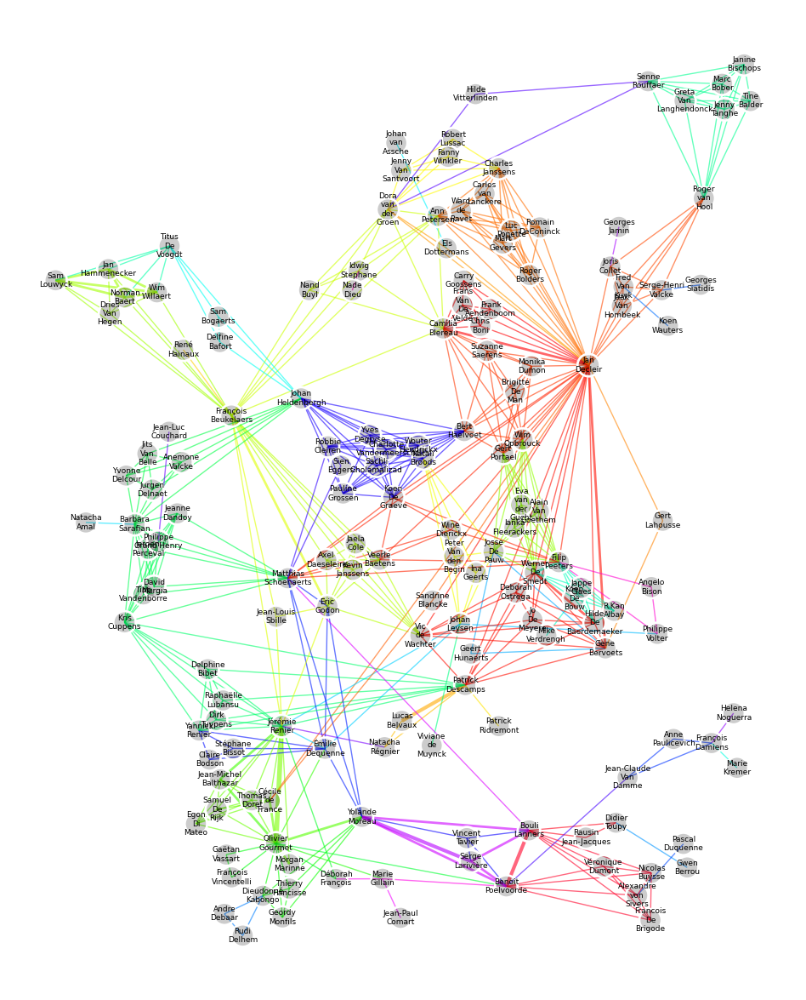
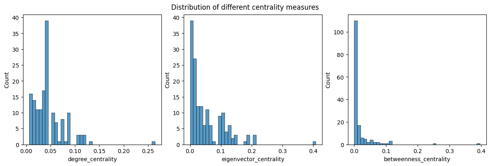
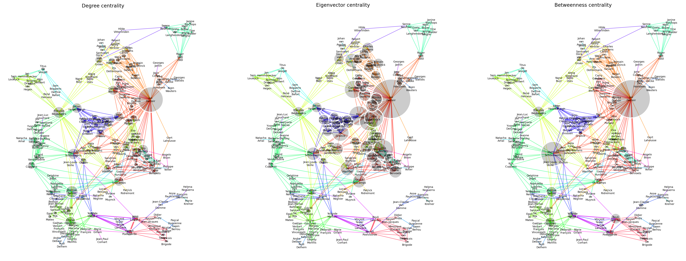
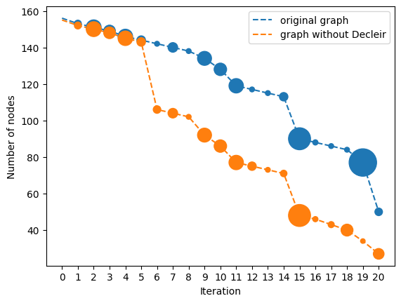
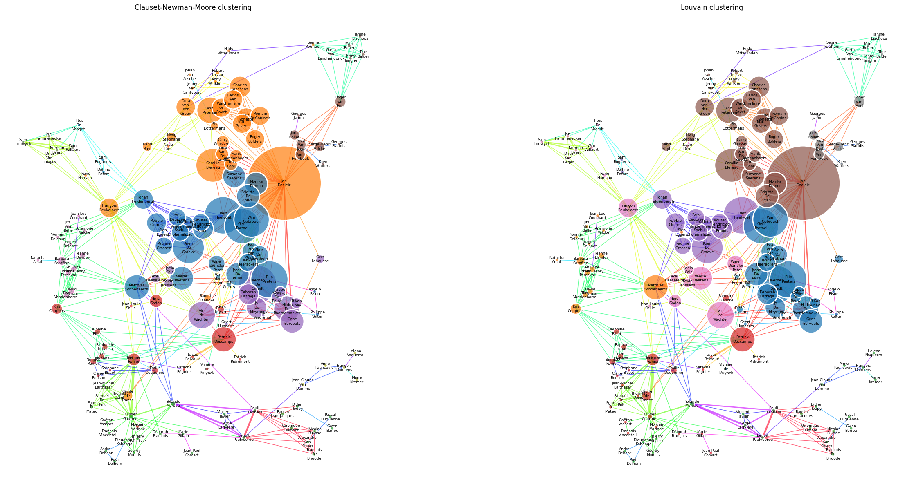

import networkx as nx
import igraph as ig
import pandas as pd
import matplotlib.pyplot as plt
import seaborn as sns
import matplotlib as mpl
import numpy as np
import randomThe belgian actor subnetwork
Load data
df_actors = pd.read_pickle('../data/generated/preprocessed/characters.pkl')
df_movies = pd.read_pickle('../data/generated/preprocessed/movies.pkl')
# we use the grouped edges, since networkx discards repeated edges, even with differents attributes
df_edges = pd.read_pickle('../data/generated/graph/actor_graph_full.grouped.pkl')
df_edges_ug = pd.read_pickle('../data/generated/graph/actor_graph_full.ungrouped.pkl')g_all = nx.from_pandas_edgelist(df_edges, 'actor1_fbid', 'actor2_fbid', 'movie_count')print(g_all)Graph with 135061 nodes and 2080273 edgesCreate a graph of belgian actors
df_belgian_actors = (df_actors
.query('actor_nationality == "Belgium"')
.dropna(subset='fb_actor_id')
.drop_duplicates(subset=['fb_actor_id']) # because might contain multiple rows where same actor plays different characters
.sort_values('fb_actor_id') # to have reproducible results, since GraphVis FDP layout is non-deterministic
.reset_index(drop=True)
)
# df_belgian_actors = df_belgian_actors.sample(frac=1, random_state=0).reset_index(drop=True) # shuffle rows with random seed until I get a nice vis from GraphVis
df_belgian_actors| wiki_id | fb_movie_id | release | character_name | actor_age | fb_char_id | fb_actor_id | release_year | actor_birth_year | actor_name | actor_birth | ethnicity | actor_height | actor_gender | actor_nationality | pageviews | |
|---|---|---|---|---|---|---|---|---|---|---|---|---|---|---|---|---|
| 0 | 11105410 | /m/02r061p | 1982 | NaN | 31.0 | /m/04httm4 | /m/01swrd | 1982 | 1950 | Chantal Akerman | 1950-06-06 | NaN | NaN | F | Belgium | NaN |
| 1 | 24827706 | /m/080q9v1 | 2002-05-17 | NaN | 39.0 | /m/0gc9nqz | /m/01wyxjj | 2002 | 1962 | Lio | 1962-06-17 | NaN | NaN | F | Belgium | NaN |
| 2 | 5875250 | /m/0fb84m | 2006 | NaN | 53.0 | /m/0cfzkk6 | /m/0266rk5 | 2006 | 1952 | Ronald Guttman | 1952-08-12 | NaN | NaN | M | Belgium | 99774.0 |
| 3 | 25839955 | /m/09v8kcn | 2009 | NaN | 33.0 | /m/0gcr9sv | /m/026nm_f | 2009 | 1975 | R.Kan Albay | 1975-09-01 | NaN | NaN | M | Belgium | NaN |
| 4 | 34748638 | /m/0j3d9tn | 2012-05-17 | Alain van Versch | 34.0 | /m/0jx6788 | /m/027ch2s | 2012 | 1977 | Matthias Schoenaerts | 1977-12-08 | NaN | NaN | M | Belgium | 127172.0 |
| ... | ... | ... | ... | ... | ... | ... | ... | ... | ... | ... | ... | ... | ... | ... | ... | ... |
| 246 | 22465221 | /m/05zv1vg | 1973 | Deputy | 54.0 | /m/0n1pbd0 | /m/0n1pbdb | 1973 | 1918 | René Hainaux | 1918-04-19 | NaN | NaN | M | Belgium | NaN |
| 247 | 21031907 | /m/05b28z4 | 1949-11-14 | Elsa | 20.0 | /m/0n1t4f9 | /m/0n1t4fm | 1949 | 1929 | Anne Campion | 1929-01-07 | NaN | NaN | F | Belgium | NaN |
| 248 | 16949792 | /m/04131_9 | 1974-09-11 | Amandine | 24.0 | /m/0n21v7b | /m/0n21v7n | 1974 | 1950 | Marianne Eggerickx | 1950-05-03 | NaN | NaN | F | Belgium | 68369.0 |
| 249 | 36035404 | /m/0j_6phf | 2012-02-29 | Radu | NaN | /m/0n4jkxv | /m/0n4jky4 | 2012 | <NA> | Gökhan Girginol | NaN | NaN | NaN | M | Belgium | NaN |
| 250 | 21031066 | /m/05b1qcd | 1949-09 | Van Putzeboom | NaN | /m/0n4yvz1 | /m/0n4yvzc | 1949 | 1910 | Victor Guyau | 1910-07-29 | NaN | NaN | M | Belgium | NaN |
251 rows × 16 columns
# all belgian actors have a name ! we truely live in a society...
assert not any(df_belgian_actors.actor_name.isna())# we lose quite a few actors since many belgian actors are connected to only non-belgian actors
g_belgian = g_all.subgraph(df_belgian_actors.fb_actor_id).copy()
print(g_belgian)Graph with 250 nodes and 558 edges# filter out self-loops and isolated nodes
g_belgian.remove_edges_from(nx.selfloop_edges(g_belgian)) # normally there should be no self-loops in the edgelist, but for sanity
g_belgian.remove_nodes_from(list(nx.isolates(g_belgian)))
print(g_belgian)Graph with 191 nodes and 558 edgesIsolating subgraphs
# create a list of connected components
gsub_belgian = [g_belgian.subgraph(c).copy() for c in nx.connected_components(g_belgian)]for G in gsub_belgian:
print(G)Graph with 156 nodes and 526 edges
Graph with 3 nodes and 3 edges
Graph with 5 nodes and 10 edges
Graph with 3 nodes and 3 edges
Graph with 3 nodes and 3 edges
Graph with 3 nodes and 2 edges
Graph with 2 nodes and 1 edges
Graph with 3 nodes and 2 edges
Graph with 2 nodes and 1 edges
Graph with 3 nodes and 2 edges
Graph with 2 nodes and 1 edges
Graph with 3 nodes and 2 edges
Graph with 3 nodes and 2 edges-> There is one large component, and a few small isolated subgraphs
g_belgian = max(gsub_belgian, key=lambda G: G.number_of_nodes())
print(g_belgian)Graph with 156 nodes and 526 edgesAdding edge and node features
# merge actor names
df_edges_belgian = nx.to_pandas_edgelist(g_belgian, source='actor1_fbid', target='actor2_fbid')
df_edges_belgian['actor1_name'] = df_belgian_actors.set_index('fb_actor_id').loc[df_edges_belgian.actor1_fbid.values].actor_name.values
df_edges_belgian['actor2_name'] = df_belgian_actors.set_index('fb_actor_id').loc[df_edges_belgian.actor2_fbid.values].actor_name.values
df_edges_belgian| actor1_fbid | actor2_fbid | movie_count | actor1_name | actor2_name | |
|---|---|---|---|---|---|
| 0 | /m/0gc50br | /m/0gc4q3w | 1 | Véronique Dumont | Francois De Brigode |
| 1 | /m/0gc50br | /m/0gc4cmz | 1 | Véronique Dumont | Nicolas Buysse |
| 2 | /m/0gc50br | /m/0c0ctvb | 1 | Véronique Dumont | Alexandre von Sivers |
| 3 | /m/0gc50br | /m/0282b9n | 1 | Véronique Dumont | Bouli Lanners |
| 4 | /m/0gc50br | /m/037b56 | 1 | Véronique Dumont | Benoît Poelvoorde |
| ... | ... | ... | ... | ... | ... |
| 521 | /m/0cm1m3w | /m/027ch2s | 1 | Robbie Cleiren | Matthias Schoenaerts |
| 522 | /m/0mzjrdl | /m/0jt8hps | 1 | Romain DeConinck | Charles Janssens |
| 523 | /m/0mzjrdl | /m/0mzflxn | 1 | Romain DeConinck | Carlos van Lanckere |
| 524 | /m/0gc9zpq | /m/0gc47kq | 1 | Axel Daeseleire | Jaela Cole |
| 525 | /m/0mzflxn | /m/0jt8hps | 1 | Carlos van Lanckere | Charles Janssens |
526 rows × 5 columns
# merge movie ids
df_edges_belgian = df_edges_belgian.merge(
(df_edges_belgian
# find the movies in edges i -> j
.merge(pd.concat(
# include edges i -> j and j -> i
[df_edges_ug, df_edges_ug.rename(columns={'actor1_fbid': 'actor2_fbid', 'actor2_fbid': 'actor1_fbid'})],
ignore_index=True # WARNING : this is important, since otherwise there are duplicate indices
), how='left', on=['actor1_fbid', 'actor2_fbid'])
# group by edge
.groupby(['actor1_fbid', 'actor2_fbid'])
# find all the movie_fbids corresponding to that edge
[['movie_fbid']]
# .agg({'movie_fbid': 'unique'}) # list of movies in common
.first()
# prepare merge
.rename(columns={'movie_fbid': 'first_movie_fbid'})
.reset_index()
),
how='left', on=['actor1_fbid', 'actor2_fbid'],
)
df_edges_belgian['first_movie_numid'] = pd.factorize(df_edges_belgian.first_movie_fbid)[0]
df_edges_belgian| actor1_fbid | actor2_fbid | movie_count | actor1_name | actor2_name | first_movie_fbid | first_movie_numid | |
|---|---|---|---|---|---|---|---|
| 0 | /m/0gc50br | /m/0gc4q3w | 1 | Véronique Dumont | Francois De Brigode | /m/063zzkb | 0 |
| 1 | /m/0gc50br | /m/0gc4cmz | 1 | Véronique Dumont | Nicolas Buysse | /m/063zzkb | 0 |
| 2 | /m/0gc50br | /m/0c0ctvb | 1 | Véronique Dumont | Alexandre von Sivers | /m/063zzkb | 0 |
| 3 | /m/0gc50br | /m/0282b9n | 1 | Véronique Dumont | Bouli Lanners | /m/063zzkb | 0 |
| 4 | /m/0gc50br | /m/037b56 | 1 | Véronique Dumont | Benoît Poelvoorde | /m/063zzkb | 0 |
| ... | ... | ... | ... | ... | ... | ... | ... |
| 521 | /m/0cm1m3w | /m/027ch2s | 1 | Robbie Cleiren | Matthias Schoenaerts | /m/0c01rxz | 57 |
| 522 | /m/0mzjrdl | /m/0jt8hps | 1 | Romain DeConinck | Charles Janssens | /m/05t0jwx | 8 |
| 523 | /m/0mzjrdl | /m/0mzflxn | 1 | Romain DeConinck | Carlos van Lanckere | /m/05t0jwx | 8 |
| 524 | /m/0gc9zpq | /m/0gc47kq | 1 | Axel Daeseleire | Jaela Cole | /m/05f6jzj | 19 |
| 525 | /m/0mzflxn | /m/0jt8hps | 1 | Carlos van Lanckere | Charles Janssens | /m/05t0jwx | 8 |
526 rows × 7 columns
# add colors to edges
edgecmap = plt.cm.gist_rainbow(np.linspace(0, 1, df_edges_belgian.first_movie_fbid.nunique()))
edgecmap[:, 3] = 0.6 # alpha channel
df_edges_belgian['color'] = df_edges_belgian.first_movie_numid.map(lambda n: tuple(edgecmap[n]))
df_edges_belgian| actor1_fbid | actor2_fbid | movie_count | actor1_name | actor2_name | first_movie_fbid | first_movie_numid | color | |
|---|---|---|---|---|---|---|---|---|
| 0 | /m/0gc50br | /m/0gc4q3w | 1 | Véronique Dumont | Francois De Brigode | /m/063zzkb | 0 | (1.0, 0.0, 0.16, 0.6) |
| 1 | /m/0gc50br | /m/0gc4cmz | 1 | Véronique Dumont | Nicolas Buysse | /m/063zzkb | 0 | (1.0, 0.0, 0.16, 0.6) |
| 2 | /m/0gc50br | /m/0c0ctvb | 1 | Véronique Dumont | Alexandre von Sivers | /m/063zzkb | 0 | (1.0, 0.0, 0.16, 0.6) |
| 3 | /m/0gc50br | /m/0282b9n | 1 | Véronique Dumont | Bouli Lanners | /m/063zzkb | 0 | (1.0, 0.0, 0.16, 0.6) |
| 4 | /m/0gc50br | /m/037b56 | 1 | Véronique Dumont | Benoît Poelvoorde | /m/063zzkb | 0 | (1.0, 0.0, 0.16, 0.6) |
| ... | ... | ... | ... | ... | ... | ... | ... | ... |
| 521 | /m/0cm1m3w | /m/027ch2s | 1 | Robbie Cleiren | Matthias Schoenaerts | /m/0c01rxz | 57 | (0.1843563512361468, 0.0, 1.0, 0.6) |
| 522 | /m/0mzjrdl | /m/0jt8hps | 1 | Romain DeConinck | Charles Janssens | /m/05t0jwx | 8 | (1.0, 0.4313725490196079, 0.0, 0.6) |
| 523 | /m/0mzjrdl | /m/0mzflxn | 1 | Romain DeConinck | Carlos van Lanckere | /m/05t0jwx | 8 | (1.0, 0.4313725490196079, 0.0, 0.6) |
| 524 | /m/0gc9zpq | /m/0gc47kq | 1 | Axel Daeseleire | Jaela Cole | /m/05f6jzj | 19 | (0.7207207207207207, 1.0, 0.0, 0.6) |
| 525 | /m/0mzflxn | /m/0jt8hps | 1 | Carlos van Lanckere | Charles Janssens | /m/05t0jwx | 8 | (1.0, 0.4313725490196079, 0.0, 0.6) |
526 rows × 8 columns
# add names to the actors
nx.set_node_attributes(g_belgian, (df_actors
.set_index('fb_actor_id')
.loc[pd.concat([df_edges_belgian.actor1_fbid, df_edges_belgian.actor2_fbid]).unique()]
.actor_name
.map(lambda name: name.replace(' ', '\n'))
.to_dict()
), 'name')# add names to the actors
nx.set_edge_attributes(g_belgian, (df_edges_belgian
.set_index(['actor1_fbid', 'actor2_fbid'])
.color
.to_dict()
), 'color')Movie count
movie_count_hist = df_edges_belgian.movie_count.value_counts().sort_index()
fig, ax = plt.subplots()
ax.bar(movie_count_hist.index, movie_count_hist.values, width=0.5)
ax.set_xticks(movie_count_hist.index)
ax.set_yscale('log')
ax.set_title('Number of shared movies between belgian actors')
ax.set_xlabel('Number of shared movie')
ax.set_ylabel('Number of edges')
plt.show()
print(f'number of movies displayed in the graph : {df_edges_belgian.first_movie_fbid.nunique()}')number of movies displayed in the graph : 72Most of the actors feature together in one movie. We list out the ones that feature together in more than 3 movies
df_edges_belgian.query('movie_count >= 3')| actor1_fbid | actor2_fbid | movie_count | actor1_name | actor2_name | first_movie_fbid | first_movie_numid | color | |
|---|---|---|---|---|---|---|---|---|
| 48 | /m/0c08q1 | /m/04mkd6k | 3 | Lucas Belvaux | Patrick Descamps | /m/05308hq | 11 | (1.0, 0.6645468998410176, 0.0, 0.6) |
| 95 | /m/0668qk | /m/0gqt7h | 4 | Olivier Gourmet | Jérémie Renier | /m/03y7fp2 | 22 | (0.487546369899311, 1.0, 0.0, 0.6) |
| 469 | /m/084ckj | /m/0gcxfmm | 3 | Yolande Moreau | Serge Larivière | /m/05sxh20 | 64 | (0.7171781756180736, 0.0, 1.0, 0.6) |
| 474 | /m/0282b9n | /m/037b56 | 3 | Bouli Lanners | Benoît Poelvoorde | /m/063zzkb | 0 | (1.0, 0.0, 0.16, 0.6) |
A first visualization
We visualize the actor graph, coloring edges based on the movie featuring the actors it connects, and making edges larger for more movies played together.
def draw_network(g, ax, vertex_size: str | float = 3.0, vertex_color: str = '#0003', min_vertex_size: float = 1.0):
gig = ig.Graph.from_networkx(g)
random.seed(7) # good seeds : 7, 10, 16, 42, 56
vertex_order = None
if isinstance(vertex_size, str):
vertex_size = np.array(gig.vs[vertex_size])*50
vertex_order = np.argsort(vertex_size)[::-1]
vertex_size = np.maximum(min_vertex_size, vertex_size)
if not vertex_color.startswith('#'):
vertex_color=gig.vs[vertex_color]
ig.plot(
gig, target=ax,
layout='davidson_harel',
vertex_label=gig.vs['name'],
vertex_label_size=6.5, vertex_size=vertex_size, vertex_color=vertex_color,
vertex_frame_color='white', vertex_frame_width=2.0,
vertex_order=vertex_order,
edge_color=gig.es['color'], edge_width=gig.es['movie_count'],
background='black'
)fig, ax = plt.subplots(figsize=(15, 15))
draw_network(g_belgian, ax)
plt.show()
Visually already, communities start to appear, and we can get a sense of centrality. For example, Jan Decleir definitely stands out.
On the bottom of the graph, we can also visually inspect a small clique composed by Yolande Moreau, Serge Larivière, Benoît Poelvoorde, and Bouli Lanners, who have featured together multiple times.
Jean-Claude Van Damme, a well-known actor, appears marginal here. This is an effect of slicing the original graph, where Jean-Claude Van Damme was well-connected, but appeared in more international movies, with non-belgian actors.
Indicators of centrality
We test how feasible some algorithms proposed in Methods are.
degree_centrality = nx.degree_centrality(g_belgian)
eigenvector_centrality = nx.eigenvector_centrality(g_belgian)
betweenness_centrality = nx.betweenness_centrality(g_belgian)
df_centrality = pd.DataFrame(degree_centrality.items(), columns=['fb_actor_id', 'degree_centrality'])
df_centrality = df_centrality.merge(pd.DataFrame(eigenvector_centrality.items(), columns=['fb_actor_id', 'eigenvector_centrality']), on='fb_actor_id', how='left')
df_centrality = df_centrality.merge(pd.DataFrame(betweenness_centrality.items(), columns=['fb_actor_id', 'betweenness_centrality']), on='fb_actor_id', how='left')
df_centrality['actor_name'] = df_belgian_actors.set_index('fb_actor_id').loc[df_centrality.fb_actor_id].actor_name.valuesWho are the top actors ?
df_centrality.sort_values('degree_centrality', ascending=False)[['degree_centrality', 'actor_name', 'fb_actor_id']].head(5)| degree_centrality | actor_name | fb_actor_id | |
|---|---|---|---|
| 2 | 0.264516 | Jan Decleir | /m/04qjng |
| 126 | 0.129032 | Jérémie Renier | /m/0gqt7h |
| 8 | 0.122581 | François Beukelaers | /m/0bq9q76 |
| 152 | 0.116129 | Matthias Schoenaerts | /m/027ch2s |
| 134 | 0.116129 | Filip Peeters | /m/0bl5pwj |
df_centrality.sort_values('eigenvector_centrality', ascending=False)[['eigenvector_centrality', 'actor_name']].head(5)| eigenvector_centrality | actor_name | |
|---|---|---|
| 2 | 0.408367 | Jan Decleir |
| 127 | 0.209502 | Werner De Smedt |
| 103 | 0.205922 | Bert Haelvoet |
| 134 | 0.204257 | Filip Peeters |
| 31 | 0.193717 | Gert Portael |
df_centrality.sort_values('betweenness_centrality', ascending=False)[['betweenness_centrality', 'actor_name']].head(5)| betweenness_centrality | actor_name | |
|---|---|---|
| 2 | 0.395843 | Jan Decleir |
| 152 | 0.254062 | Matthias Schoenaerts |
| 8 | 0.116199 | François Beukelaers |
| 126 | 0.110377 | Jérémie Renier |
| 107 | 0.108920 | Bouli Lanners |
Jan Decleir comes out on top each time. Matthias Schoenaerts, François Beukelaers as well as Filip Peeters appear two times.
fig, ax = plt.subplots(figsize=(12, 4), ncols=3, constrained_layout=True)
sns.histplot(df_centrality, x='degree_centrality', ax=ax[0], bins=40)
sns.histplot(df_centrality, x='eigenvector_centrality', ax=ax[1], bins=40)
sns.histplot(df_centrality, x='betweenness_centrality', ax=ax[2], bins=40)
fig.suptitle('Distribution of different centrality measures')
plt.show()
The histograms reveal that eigenvector centrality produces a powerlaw-like distribution : only a few actors are “central”
There are many nodes with zero betweenness centrality : these might reveal actors who have only played in one movie, and therefore do not contribute to the general connectedness ?
Degree centrality only yields local information, since it is just proportional to the local node degree. Therefore, it might not be as insightful
nx.set_node_attributes(g_belgian, df_centrality.set_index('fb_actor_id').degree_centrality.to_dict(), 'degree')
nx.set_node_attributes(g_belgian, df_centrality.set_index('fb_actor_id').eigenvector_centrality.to_dict(), 'eigenvector')
nx.set_node_attributes(g_belgian, df_centrality.set_index('fb_actor_id').betweenness_centrality.to_dict(), 'betweenness')fig, axs = plt.subplots(figsize=(30, 15), ncols=3, dpi=200)
for vsize, ax in zip(['degree', 'eigenvector', 'betweenness'], axs.flat):
draw_network(g_belgian, ax, vertex_size=vsize)
ax.set_title(f'{vsize.capitalize()} centrality')
plt.show()
Degree centrality
The simplest measure of centrality yields the result that more connected seem more important
Eigenvector centrality
A striking difference here is that there appears a clear “core”, but Jan Decleir, Jérémie Renier are still top-2 actors
Nodes connected to the high eigenvector centrality nodes are more likely to have a high eigenvector centrality.
Furthermore, eigenvector centrality not only picks up on the “local” connectedness of an actor, but also its place in the whole graph -> probably more relevant for our analysis ?
Betweenness centrality
The separation is much more extreme : Jean Decleir, Matthieu Schoenaerts, etc. appear as essential hubs to the graph. Note the interesting case of Senne Rouffaer, who is the only connection to a small cluster on the upper left, to the rest of the graph. This metric might be more important to interpret separation of communities. This is clearly visualized here
Graph heuristics
Diameters
This graph is relatively small. We can get from any actor to any other in less than 8 hops.
nx.diameter(g_belgian)8Node connectivity
We test the resilience of the graph to having nodes removed.
TODO : do this with the average path length as a measure
def repeat_minimum_node_cut(g, max_iter: int = 20):
g = g.copy()
number_of_nodes = [g.number_of_nodes()]
centrality_of_nodes_removed = [np.array(np.nan)]
for i in range(max_iter):
nodes_to_remove = nx.minimum_node_cut(g)
g.remove_nodes_from(nodes_to_remove)
df_removed = df_centrality.set_index('fb_actor_id').loc[list(nodes_to_remove)]
centrality_of_nodes_removed.append(df_removed.betweenness_centrality.values)
gsub = [g.subgraph(c).copy() for c in nx.connected_components(g)]
g = max(gsub, key=lambda G: G.number_of_nodes())
number_of_nodes.append(g.number_of_nodes())
return number_of_nodes, centrality_of_nodes_removedg_belgian_without_Decleir = g_belgian.copy()
g_belgian_without_Decleir.remove_node('/m/04qjng') # Remove Jan Decleir
number_of_nodes0, centrality_removed0 = repeat_minimum_node_cut(g_belgian)
number_of_nodes1, centrality_removed1 = repeat_minimum_node_cut(g_belgian_without_Decleir)fig, ax = plt.subplots()
x = list(range(len(number_of_nodes0)))
ax.plot(x, number_of_nodes0, '--', color='tab:blue', label='original graph', zorder=1)
ax.plot(x, number_of_nodes1, '--', color='tab:orange', label='graph without Decleir', zorder=1)
ax.scatter(x, number_of_nodes0, s=np.hstack(centrality_removed0)*2e3, color='tab:blue', zorder=2)
ax.scatter(x, number_of_nodes1, s=np.hstack(centrality_removed1)*2e3, color='tab:orange', zorder=2)
ax.set_xticks(x)
ax.legend()
ax.set_xlabel('Iteration')
ax.set_ylabel('Number of nodes')
plt.show()
Clustering
import networkx.algorithms.community as nxcommunity
import itertoolsnodecmap = [ mpl.colors.to_rgba(c, alpha=0.7) for c in plt.rcParams['axes.prop_cycle'].by_key()['color'] ]Modularity communities
We use the Clauset-Newman-Moore greedy modularity maximization to blindly try to find some communities.
communities = nxcommunity.greedy_modularity_communities(g_belgian)
len(communities)
node2community = {}
for i, com in enumerate(communities):
for node in com:
node2community[node] = i
node2color = { node: nodecmap[node2community[node]] for node in g_belgian.nodes }
nx.set_node_attributes(g_belgian, node2color, 'newman_color')9 communities have been found.
Note : we can manually set an upper bound for the number of communities using the best_n kwarg
Louvain algorithm
The louvain algorithm works on nodes (actors) instead of edges (movies), which is a much more natural way to think about the problem.
communities = nxcommunity.louvain_communities(g_belgian, seed=0)
len(communities)
node2community = {}
for i, com in enumerate(communities):
for node in com:
node2community[node] = i
node2color = { node: nodecmap[node2community[node]] for node in g_belgian.nodes }
nx.set_node_attributes(g_belgian, node2color, 'louvain_color')Comparison
fig, axs = plt.subplots(figsize=(30, 15), ncols=2)
for color, ax in zip(['newman_color', 'louvain_color'], axs.flat):
draw_network(g_belgian, ax, vertex_size='eigenvector', vertex_color=color)
axs[0].set_title('Clauset-Newman-Moore clustering')
axs[1].set_title('Louvain clustering')
plt.show()
We set a minimum vertex size, so that we can still see the clustering
The Newman communities found are not visually convicing, espectially the green one. I think this is because the modularity is a measure on the “edge importance”, and that in our case this does not make sense. Edges generated by each movie should intuitively have the same importance, rather, the actors should be the ones who are important.
We see that the Louvain algorithm generates visually more convincing results, which group actors together close in the force-directed graph
Preliminary conclusions
In the above graph, nodes are sized according to eigenvalue centrality and are colored according to (Louvain) community, and edges are colored according to the movie.
Key observations : - Communities often group actors which seem to have similar eigenvalue centrality, and have played in the same movies. For instance, the green community is well connected by majoritarily two movies, colored cyan and purple. - Three communities stand out : red, gray and brown. With all three, they represent a large majority of the well ranked actors (according to eigenvalue centrality). These can be interpreted as the “popular” Belgian actors - The five other communities are that of smaller actors. These might correspond to more “niche” communities. - Smaller communities seem to rely on one or two entrypoint-actors. The pink community in the upper-right holds together solely through actor Senne Rouffaer. The green community has two entry-points : Johan Heldenberg, who provides a bridge with the (popular) brown community, and Matthias Schoenaerts, bridges with the more niche purple and blue communities.